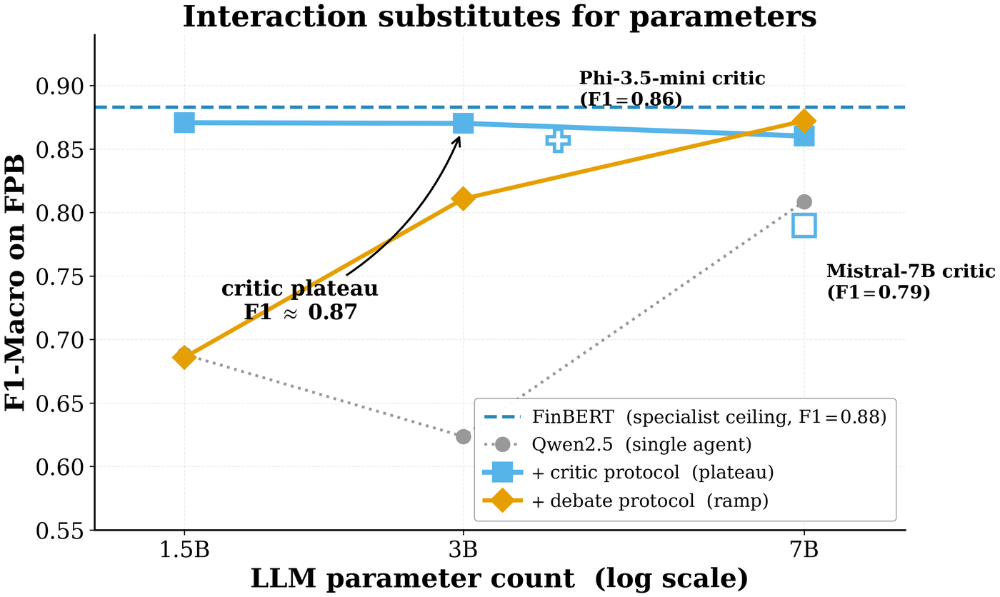

TriAgent → The critic plateau
The critic plateau
Give a 1.5B model two cheap opinions to adjudicate instead of asking it to classify, and it jumps from macro-F1 0.69 to 0.87 — matching a 7B model at one third the cost.
The result
Instead of asking the LLM to classify the input directly, hand it the predictions of two much cheaper agents — a word-level lexicon and a 110M-parameter sentence transformer — and ask it to adjudicate between them. Macro-F1 on Financial PhraseBank:
| Protocol | Qwen-1.5B | Qwen-3B | Qwen-7B | Mistral-7B | Phi-3.5-mini |
|---|---|---|---|---|---|
| LLM alone | 0.69 | 0.62 | 0.81 | 0.70 | — |
| critic | 0.87 | 0.87 | 0.86 | 0.79 | 0.86 |
| debate | 0.69 | 0.81 | 0.87 | 0.82 | — |
The lift over the LLM alone is +18 points at 1.5B and +25 points at 3B. Model size stops buying accuracy — and the bootstrap confidence intervals confirm the plateau is real rather than a trend:
| Strategy | Macro-F1 | Bootstrap 95% CI |
|---|---|---|
| critic@1.5B | 0.8707 | [0.8602, 0.8796] |
| critic@3B | 0.8702 | [0.8598, 0.8796] |
| critic@7B | 0.8602 | [0.8502, 0.8703] |
| debate@7B | 0.8722 | [0.8624, 0.8816] |
All four intervals overlap. Meanwhile critic@1.5B costs $0.04 per 1,000 queries and critic@7B costs $0.11 — three times the price for a statistically indistinguishable result.

Why it happens
The critic is not solving the classification task. It is adjudicating between two structured opinions from agents that fail in different places. Adjudication is a strictly easier problem, and a small model can do it when the scaffolding is good.
The paper's framing: interaction substitutes for parameters. You can buy accuracy with model size, or you can buy it with better-structured inputs, and on this task the second is 3× cheaper.
The negative control that identifies the mechanism
The obvious objection is that this is just ensembling, or self-consistency, in a new costume. So the paper runs the control: three personas of the same Qwen2.5-1.5B — bull, bear, and neutral prompts — voting together.
| Configuration | Macro-F1 |
|---|---|
| persona-bull | 0.74 |
| persona-bear | 0.68 |
| persona-neutral | 0.55 |
| 3-persona vote | 0.66 |
| single Qwen-1.5B baseline | 0.69 |
| cross-tier critic@1.5B | 0.87 |
Inter-persona agreement is 81%. The homogeneous vote scores below a single instance of the same model. Same parameter count, same family, three agents, worse result.
It is not "more agents". It is agents that read different amounts of context and therefore fail in structurally different places — what the paper calls granularity stratification. Measured: pairwise Cohen's κ 0.19–0.61, pairwise Jaccard error overlap 0.132–0.146.
Where it fails
The plateau is calibration-conditional, and the paper reports the failure case in full rather than confining the claim to the dataset where it works.
| Testbed | FinBERT F1 | FinBERT ECE | critic@1.5B | critic@7B | LLM alone |
|---|---|---|---|---|---|
| FPB (curated news) | 0.88 | 0.016 | 0.87 | 0.86 | 0.81 |
| TFNS (informal tweets) | 0.66 | — | 0.66 | 0.65 | 0.76 |
On TFNS both critic settings fall below the LLM-alone baseline. When the mid-tier specialist is miscalibrated on fragmented customer text, the critic scaffolding actively drags the LLM down. Bad scaffolding is worse than no scaffolding.
Two further limits. The plateau height is family-specific: Mistral-7B as critic reaches 0.79 — a 9-point lift over Mistral-7B alone, but short of the Qwen ceiling. And aggressive quantisation is not free: Qwen-14B at 4-bit scores 0.79, below 7B at bf16 (0.81).
The deployable recipe
Before committing to a critic setup on a new task:
- Check your mid-tier specialist's calibration. If its Expected Calibration Error is poor, stop here.
- Run a one-shot critic-versus-LLM-alone comparison on a held-out slice. If the critic does not beat the LLM alone, route around it.
- If the plateau appears, pick the smallest model that reaches it. That is the entire cost saving.
- Prefer critic at small sizes and debate at 7B and above.
Critic versus debate
The two protocols suit different size regimes, and the reason is mechanical. Critic gives the LLM the cheap agents' outputs as scaffolding — a small model can integrate that. Debate adds a round in which the LLM also sees its own round-1 rationale, which for a small model is noise it cannot discount. Hence debate's steep size curve (0.69 → 0.81 → 0.87) against critic's flat one.
At 7B, debate overtakes: it becomes the only protocol that strictly beats the specialist on any class, reaching negative-class F1 0.893 against FinBERT's 0.879. The lift is precision-side (+2.1 pp) at near-equal recall — the operationally meaningful regime for risk management, where a false bearish flag triggers unnecessary hedging.